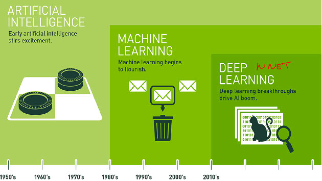
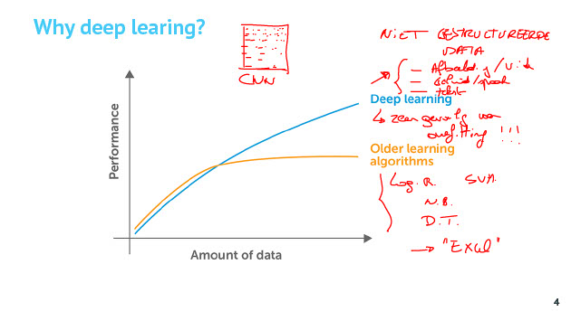
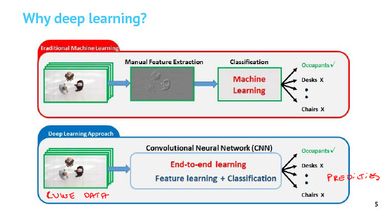
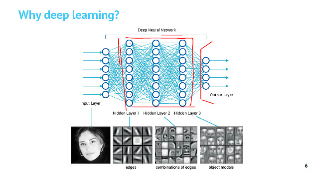
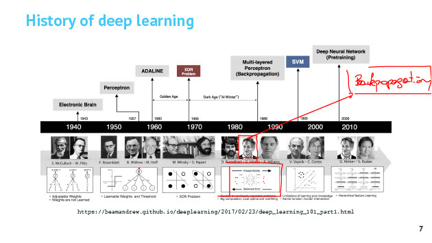
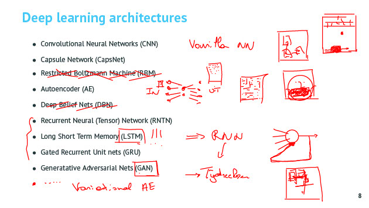

Introductie Deep Learning
Tags: AI deeplearning
Date: 2021-02-19
Type: Cursus topic
Related:
Source :
Notities

Deep learning deel van Machine learning en maakt gebruik van Neurale Netwerken. (selfdriving cars, object detectie, detectie tumoren, google translate, ... )
Waarom Deep Learning ?

- Bij deep learning wordt je model beter en beter als je meer data hebt om te trainen maar bij ouder machine learn algoritmes treed er op een gegeven moment saturatie op en worden die modellen niet beter met meer trainingsdata.
Waarom dan niet altijd deep learning toepassen ?
Als je weinig data hebt dan gaan klassieke methodes betere predicties doen dan een NN. Dit komt omdat een NN veel parameters heeft en die moeten allemaal ingesteld worden.
Deep learning is zeer gevoelig voor overfitting dus als je kleine hoeveelheden data hebt dan zijn oude modellen beter omdat die de data niet van buiten gaat leren.
Klassieke methodes gaan meer inzicht geven hoe predicties tot stand zijn gekomen. Bij NN is dit veel moeilijker of onmogelijk. Bij veel sectoren willen ze reden kennen waarom predictie niet goed is. (bijv banken, medische wereld)
Deep learning kan beter overweg met niet gestructureerde data :
- afbeeldingen, video
- geluid, spraak
- tektst
Klassieke methodes kunnen onderliggende relaties tss bijv pixels niet vatten. Deep learning modellen gaan zelf op zoek naar relaties tss features, naar nieuwe features die die verbanden bevatten.

- De NN zijn zelf in staat tot feature extraction, volledige pipeline van ruwe data tot predicties doet model zelf. Bij de oude modellen moest je bijv zelf feature extraction programmeren en daar kruipt 90% van je tijd in. END-TO-END machine learning. De fundamenten zijn al langer gelegd (jaren 40-60) maar nu veel rekenkracht en data.


Verschillende architecturen

- Convolutional Neural Networks (CNN) > image recognition, analyse van tijdsreeksen, NNP
- Capsule Network (CapsNet) > veel rekenkracht nodig, houd rekening met de positionering van objecten tov in een afbeelding
- Restricted Boltzmann Machine (RBM) - verouderd
- Autoencoder (AE) > input reconstrueren (bijv compressie/decompressie, ruis uit afbeeldingen, recommendation system, anomaly detection, resolutie verhogen van een beeld)
- Deep Belief Nets (DBN) > niet
- Recurrent Neural (Tensor) Network (RNTN)
- Long Short Term Memory (LSTM)
- Gated Recurrent Unit nets (GRU)
RNTN + LSTM + GRU > RNN (recurrent neural networks) met geheugen, predicties doen op time-series (= data waarbij volgorde van belang is) (spraak, tekst, videosequenties, ) - Generatative Adversarial Nets (GAN) > realistische data genereren, resolutie beeld verhogen
NN niet veel voor regressie gebruikt maar eerder voor classificatie.
Wanneer spreken we van deep learning ?
Als er meerdere hidden layers zijn in een NN. Vanaf 2, 3, ... hidden layers spreek je van deep learning.
Vragen
-